측량및지형공간정보산업기사 (2007-05-13 기출문제)
1과목: 응용측량
1. 지거를 6m의 등간격으로 택하고, 각 지거가 y1=3.6m, y2=9.2m, y3=11.4m, y4=13.6m, y5=7.2m이었다. Simpson 제1법칙의 공식으로 면적을 구한 값은?
- 156..35m2
- 212.00m2
- 212.67m2
- 249.60m2
(정답률: 알수없음)

2. 각과 위치에 의한 경관도의 정향화에서 시설물의 1점을 시준 할 때 시준선과 시설물 축선이 이루는 각 a는 크기에 따라 입체감에 변화를 주는데 다음 중 입체감 있게 계획이 잘된 경관을 얻을 수 있는 범위로 가장 적합한 것은?
- 10°＜a≤30°
- 10°＜a≤50°
- 10°＜a≤60°
- 10°＜a≤70°
(정답률: 알수없음)
3. 하나의 터널을 완성하기 위해서는 계획ㆍ설계ㆍ시공 등의 작업과정을 거쳐야 한다. 다음 중 터널의 시공과정 중에 주로 이루어지는 측량은?
- 지형측량
- 터널 외 기준점 측량
- 세부측량
- 터널 내 측량
(정답률: 알수없음)
4. 그림과 같은 다각형의 토량을 양단면평균법, 각주공식 및 중앙단면법으로 산정한 토량의 크기를 비교한 것으로 옳은 것은? (단, A1=300m2, Am=200m2, A2=100m2이고 상호간에 평행하며 h=20m, 측면은 평면이다.)
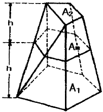
- 양단면 평균법＜각주공식＜중앙단면법
- 양단면 평균법＞각주공식＞중앙단면법
- 양단면 평균법 = 각주공식 = 중앙단면법
- 양단면 평균법＜각주공식 = 중앙단면법
(정답률: 알수없음)
5. 단곡선을 설치하려고 한다. R=300m, I=60° 일 때 접선장(T.L)과 곡선장(C.L)은 각각 얼마인가?
- 150.21m, 520.22m
- 173.21m, 314.16m
- 183.50m, 400.⑤m
- 380.35m, 1025.30m
(정답률: 알수없음)
6. 다음 그림과 같은 단곡선 설치에서 I=60°, R=300m일 때 중앙 종거 M은 얼마인가? (단, 중앙종거법에 의한다.)
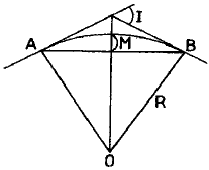
- 40.2m
- 30.2m
- 20.2m
- 10.2m
(정답률: 알수없음)
7. 홍수 시 급히 유속을 관측할 때 주로 이용되는 관측 방법으로 가장 적합한 것은?
- 표면부자
- 이중부자
- Price식 유속계
- Screw형 유속계
(정답률: 알수없음)
8. 다음 중 노선측량의 순서로 가장 적합한 것은?
- 노선선정→지형측량→중심선측량→종ㆍ횡단측량→용지측량→공사측량
- 노선선정→용지측량→중심선측량→종ㆍ횡단측량→공사측량→지형측량
- 노선선정→공사측량→중심선측량→종ㆍ횡단측량→용지측량→지형측량
- 노선선정→지형측량→중심선측량→종ㆍ횡단측량→공사측량→용지측량
(정답률: 알수없음)
9. 댐 외부의 수평변위에 대한 측정방법으로 가장 부적합한 것은?
- 삼각측량
- GPS측량
- 시거측량
- 삼변측량
(정답률: 알수없음)
10. 측량의 결과 다음과 같은 때 전체 토량은?
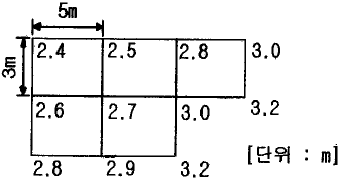
- 215m3
- 210m3
- 2⑤m3
- 200m3
(정답률: 알수없음)
11. 터널 곡선부의 곡선측설법으로 적절한 방법은?
- 현편거법
- 지거법
- 중앙종거법
- 편각법
(정답률: 알수없음)
12. 하천에서 수심측량 후 측점에 숫자로 표시하는 지형표시 방법은?
- 점고법
- 기호법
- 우모법
- 등고선법
(정답률: 알수없음)
13. 다음과 같은 터널에서 AB 사이의 경사가 1/250이고 BC사이의 경사는 1/100 일 때 측점 C사이의 지반고 차이는 얼마인가?
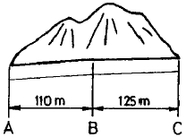
- 1.690m
- 1.645m
- 1.600m
- 1.590m
(정답률: 알수없음)
14. △ABC에서 ㉮:㉯:㉰의 면적의 비를 각각 4:3:2로 분할할 때 EC의 길이는?
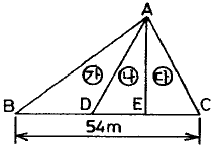
- 10.8m
- 12.0m
- 16.2m
- 18.0m
(정답률: 알수없음)
15. 하천의 유속측정에서 수면으로부터 다음 깊이의 유속을 측정 하였을 때 평균유속은? (단, 수심의 2/10 에서의 유속이 0.687m/sec, 수심의 6/10 에서의 유속이 0.528 m/sec, 수심의 8/10에서의 유속이 0.382m/sec이다.)
- 0.63m/sec
- 0.53m/sec
- 0.43m/sec
- 0.33m/sec
(정답률: 알수없음)
16. 고속도로의 곡선설치에 가장 많이 이용하는 완화곡선은?
- 원곡선
- 렘니스케이트(Lemniscate)곡선
- 클로소이드(Clothoid) 곡선
- 3차 포물선
(정답률: 알수없음)
17. 하천측량에서 보통 많이 쓰여지는 삼각망은?
- 교호 삼각망
- 사변쇄망
- 유심 삼각망
- 단열 삼각망
(정답률: 알수없음)
18. 자동차가 곡선부를 주행할 경우에 뒷바퀴는 앞바퀴보다도 항상 안쪽으로 지난다. 그러므로 곡선부에서는 그 내측부분을 직선부에 비하여 넓게 할 필요가 있는데, 이 때 곡선부의 확폭량(ε)을 나타내는 식은? (단, D:차폭(레일간격, V:설계속도, R:곡선반지름. L:차량 뒤축에서부터 차량의 앞면까지 거리)
- ε=DV2/R
- ε=DV2/DR
- ε=L2/R
- ε=L2/2R
(정답률: 알수없음)
19. 그림과 같은 삼각형 토지의 밑변 BC에 평행한 선분 XY로 분할하여 면적비 m:n=1.4가 되었다.
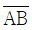
=50m 일 때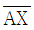
는?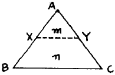
- 10.0m
- 11.2m
- 20.0m
- 22.4m
(정답률: 알수없음)
20. 클로소이드 곡선의 성질에 대한 설명 중 잘못된 것은? (단, R:곡선의 반지름, L:곡선 길이, A:매개변수)
- 클로소이드는 나선의 일종이다.
- 모든 클로소이드는 닮은꼴이다.
- 클로소이드 요소는 전부 길이 단위를 갖는다.
- RㆍL=A2은 클로소이드의 기본식이다.
(정답률: 알수없음)
2과목: 사진측량 및 원격탐사
21. 사진측정의 특성에 관한 설명으로 볼 수 없는 것은?
- 접근하기 어려운 대상물의 측정
- 분업화에 의한 능률 향상
- 넓지 않은 구역에서의 측정에 적합
- 축척변경의 용이
(정답률: 알수없음)
22. 다음 중 GIS의 구현과 운용과정에 있어서 필요한 주요 학문 분야로 가장 거리가 먼 것은?
- 지도/지리학
- 역사학
- 측량/측지학
- 전산학
(정답률: 알수없음)
23. 수치표고모델(DEM:Digital Elevation Model)의 응용분야에 대한 설명으로 관계가 없는 것은?
- 도시의 성장을 분석하기 위한 시계열정보
- 도로의 부지 및 댐의 위치선정
- 수치 지형도 작성에 필요한 고도정보
- 3D를 통한 광산, 채석장, 저수지 등의 설계
(정답률: 알수없음)
24. 편위수정을 거친 사진을 집성하여 만든 사진지도로 등고선이 삽입되어 있지 않은 것은?
- 중심투영 사진지도
- 약조정집성 사진지도
- 반조정집성 사진지도
- 조정집성 사진지도
(정답률: 39%)
25. 원격탐측(Remote Sensing)의 정의로 가장 적합한 것은?
- 지상에서 대상물체에 전파를 발사하여 그 반사파를 이용하여 관측하는 것
- 센서를 이용하여 대상물에서 반사 또는 방사된 전자스펙트럼을 이용하여 정보를 얻는 기법
- 물체들의 고유 스펙트럼을 이용하여 각각의 구성성분을 지상의 레이더망으로 수집하여 처리하는 방법
- 우주선에서 찍은 중복된 사진을 이용하여 지상에서 항공사진의 처리와 같은 방법으로 판독하는 작업
(정답률: 알수없음)
26. 아래의 관측값의 경중평균중심을 얼마인가? (단, 좌표=(x, y))
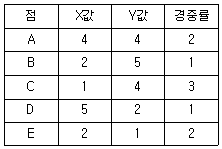
- (2.8, 3.2)
- (2.4, 3.2)
- (1.6, 1.8)
- (1.3, 1.6)
(정답률: 알수없음)
27. 다음 중 GIS에서 많이 사용되는 관계형 데이터베이스 모형의 장점에 해당 되지 않는 것은?
- 정보를 추출허기 위한 질의의 형태에 제한이 없다.
- 모형 구성이 단순하고 이해가 빠르다.
- 테이블의 구성이 자유롭다.
- 테이블의 수가 상대적으로 적어 저장 용량을 상대적으로 적게 차지한다.
(정답률: 알수없음)
28. 원격탐사 영상 중 2개의 밴드를 이용해 4개의 분류항목으로 트레이닝을 실시하고 최단거리결정규칙을 적용했을 때 화소값 (132, 225)는 어떤 분류항목에 할당해야 하는가?
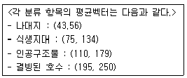
- 나대지
- 식생지대
- 인공구조물
- 결빙된 호수
(정답률: 알수없음)
29. 항공사진 촬영에서 넓은 지역을 촬영할 때 일반적인 비행방향으로 옳은 것은?
- 북동방향
- 북서방향
- 동서방향
- 동남방향
(정답률: 알수없음)
30. 비행고도 6000m에서 찍은 항공사진 Ⅰ의 기선 길이가 58.6mm, 사진 Ⅱ의 기선 길이가 57.2mm일 때 시차차 1.32mm 인 구조물의 높이는?
- 73.5m
- 78.5m
- 132.0m
- 136.8m
(정답률: 알수없음)
31. 초점거리 200mm, 비행고도 3000m인 항공사진측량의 일반적인 평면 허용 오차 범위는?
- 0.15~0.45m
- 0.50~0.80m
- 1.5m~4.5m
- 3.0m~9.5m
(정답률: 알수없음)
32. 래스터 데이터(격자 자료) 구조에 대한 설명으로 옳지 않은 것은?
- 셀의 크기에 관계없이 컴퓨터에 저장되는 자료의 양은 항상 일정하다.
- 셀의 크기는 해상도에 영향을 미친다.
- 셀의 크기에 의해 지리정보의 위치 정확성이 결정된다.
- 연속면에서 위치의 변화에 따라 속성들의 점진적인 현상 변화를 효과적으로 표현할 수 있다.
(정답률: 알수없음)
33. 표정점을 선점 할 때의 유의사항으로 옳은 것은?
- 원판의 가장자리에서 1cm 이내에 나타나는 점을 선택하여야 한다.
- 시간적으로 일정하게 변하는 점을 선택하여야 한다.
- 표정점을 X, Y, H가 동시에 정확하게 결정될 수 있는 점을 선택하여야 한다.
- 측점을 연장한 가상점을 선택하여야 한다.
(정답률: 알수없음)
34. 다음 ()안에 알맞은 용어로 가장 적합한 것은?
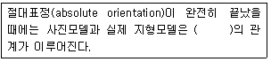
- 이동(異動)
- 상사(相似)
- 평행(平行)
- 일치(一致)
(정답률: 알수없음)
35. 항공사진에서 초점(화면)거리가 의미하는 것은?
- 사진의 음화면과 양화면과의 거리
- 사진면상에서 지표간의 거리
- 카메라의 투영 중심에서 화면까지의 수선거리
- 사진면에서 기준면에 이르는 거리
(정답률: 알수없음)
36. 항공사진의 판독요소 중 평면적인 넓이 또는 길이나 목표물의 윤곽, 구성, 배치 및 일반적인 형태 등을 알 수 있는 요소는?
- 음영
- 색조
- 크기 및 형상
- 질감
(정답률: 알수없음)
37. 초점거리 153mm인 항공사진기를 이용하여 촬영경사 4°로 평지를 촬영하였다. 사진의 등각점은 주점으로부터 몇 mm인 곳에 있는가?
- 9.6mm
- 7.4mm
- 5.3mm
- 3.2mm
(정답률: 알수없음)
38. UTM 좌표에 관한 설명으로 옳은 것은?
- 각 구역을 경도는 8°, 위도는 6°로 나누어 투영한다.
- 남북방향의 원점은 북반구, 남반구 모두 적도를 기준으로 0m에서 시작한다.
- 북위 85도부터 남위 85도까지 투영범위를 갖는다.
- 우리나라는 51S~52S 구역에 위치하고 있다.
(정답률: 39%)
39. 초점거리 150mm인 카메라로 축척 1:6000 으로 항공사진을 촬영하고자 한다면 촬영고도를 얼마로 하여야 하는가?
- 400m
- 540m
- 900m
- 1200m
(정답률: 알수없음)
40. 다음 중 (C)에 들어갈 표정은 무엇인가?
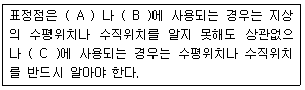
- 내부표정
- 상호표정
- 접합표정
- 절대표정
(정답률: 알수없음)
3과목: GIS 및 GPS
41. 두 점의 거리 관측을 A, B, C 세 사람이 실시하여 A는 4회 관측의 평균이 120.58m이고, B는 2회 관측의 평균이 120.51m, C는 7회 관측의 평균이 120.62m이라면 이 거리의 최확값은?
- 120.56m
- 120.67m
- 120.54m
- 120.59m
(정답률: 알수없음)
42. 연속적인 다중위치결정체계의 항법체계인 GPS위성의 궤도경사각은 몇 도이고, 적도면상 몇 도의 간격으로 배치되어 있는가?
- 궤도경사각 55°, 적도면상 55° 간격
- 궤도경사각 55°, 적도면상 60° 간격
- 궤도경사각 60°, 적도면상 55° 간격
- 궤도경사각 60°, 적도면상 60° 간격
(정답률: 알수없음)
43. 삼각측량 성과표에 기재내용이 아닌 것은?
- 위도ㆍ경도
- 삼각점의 표고
- 시준점의 방위와 거리
- 삼각점의 등급 및 번호
(정답률: 알수없음)
44. 1눈금이 2mm이고 감도가 30“인 레벨로서 거리 100m 지점의 표척을 읽었더니 1.633m였다. 그런데 표척을 읽을 때 기포가 2눈금 뒤로 가 있었다면 올바른 표척의 읽음값은? (단, 표척은 연직으로 세웠음)
- 1.633m
- 1.662m
- 1.923m
- 1.544m
(정답률: 알수없음)
45. 다음 중 GIS 위치결정방법으로 옳은 것은?
- 반송파 위상관측법
- 초장기선 간섭계법
- 다중파장대 스캐너법
- 위성 레이저 거리측량법
(정답률: 알수없음)
46. 관측점 10점인 폐합 트래버스의 내각의 합은 몇 도인가?
- 180°
- 360°
- 1440°
- 2160°
(정답률: 알수없음)
47. GPS는 인공위성을 이용한 지구위치결정체계이다. 이외에도 이와 유사한 인공위성 위치결정체계가 아닌 것은?
- NAVSAT
- GRANAS
- GLONASS
- SAR
(정답률: 알수없음)
48. 1등 삼각망내 어떤 삼각형의 구과량이 10“일 때 그 구면삼각형의 대략적인 면적은 얼마인가? (단, 지구의 평균곡률반경은 6,370km임)
- 1,000km2
- 1,500km2
- 2,000km2
- 2,500km2
(정답률: 알수없음)
49. 다음 등고선의 성질에 대한 설명으로 옳지 않은 것은?
- 등고선은 지표의 최대경사선의 방향과 직교한다.
- 높이가 다른 등고선은 절벽이나 동굴의 지형을 제외하고는 교차하거나 만나지 않는다.
- 급경사는 완경사에 비해 등고선 간격이 넓다.
- 동일 경사의 지면이 평면일 때엔즌 등고선은 서로 간격이 같은 평행선이 된다.
(정답률: 알수없음)
50. 다음의 축척에 대한 도상거리 중 실거리가 가장 짧은 것은?
- 축척 1/500 일 때의 도상거리 3cm
- 축척 1/200 일 때의 도상거리 8cm
- 축척 1/1000 일 때의 도상거리 2cm
- 축척 1/300 일 때의 도상거리 4cm
(정답률: 알수없음)
51. 아래 사변형의 조건식의 총수는 몇 개인가?
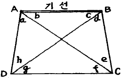
- 4개
- 5개
- 6개
- 7개
(정답률: 알수없음)
52. 삼각수준측량을 하기 위해 데오드라이트에 의하여 천정각거리 1⑤° 16‘ 25“를 얻었다. 이 각을 고저각으로 바꾸면 얼마인가?
- 상향각 15° 16‘ 25“
- 하향각 15° 16‘ 25“
- 상향각 74° 43‘ 35“
- 하향각 74° 43‘ 35“
(정답률: 알수없음)
53. 테이프로 거리측정할 때에 생기는 오차 중에서 정오차가 아닌 것은?
- 테이프의 길이가 표준 길이보다 길거나 짧았다.
- 측점간의 거리가 멀어서 테이프가 자중에 의해 처짐이 발생하였다.
- 측정시 테이프에 가해진 장력이 표준 장력과 다르다.
- 측정 중에 바람의 방향이 변화하였다.
(정답률: 알수없음)
54. 측량을 하여 그림과 같은 결과를 얻었다면 측선 a의 길이는 얼마인가? (단, 측각오차는 없음)
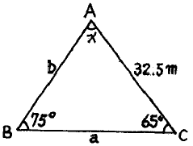
- 35.2m
- 31.6m
- 21.6m
- 26.4m
(정답률: 알수없음)
55. 다음 그림에서 AB의 도상거리가 5cm이고 축척이 1/1000 일 때 AB의 경사는?
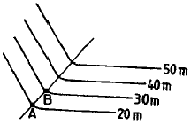
- 10%
- 15%
- 20%
- 25%
(정답률: 알수없음)
56. 기지점 A, B, C로부터 다각측량에 의하여 표와 같은 성과를 얻었다. P점의 X좌표의 최확값은?
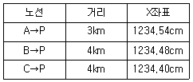
- 1234.43m
- 1234.46m
- 1234.48m
- 1234.56m
(정답률: 알수없음)
57. 다음 그림은 교호 수준 측량의 결과이다. B점의 표고는? (단, A점의 표고는 50m이다.)
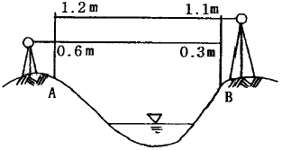
- 49.8m
- 50.2m
- 52.2m
- 52.6m
(정답률: 알수없음)
58. 범세계위치결정체계(GPS)에 대한 설명 중 틀린 것은?
- 관측점의 위치는 정확한 위치를 알고 있는 위성에서 발사한 전파의 소요시간을 관측함으로서 결정한다.
- GPS 위성은 약 20,000km의 고도에서 24시간의 주기로 운행한다.
- 구성은 우주부문, 제어부문, 사용자부문으로 이루어진다.
- GPS의 측위용 반송파는 L1과 L2, 두 개가 있다.
(정답률: 알수없음)
59. 경사가 일정한 지형에서 AB 2점 간의 경사거리를 측정하여 160m를 얻었다. AB간의 고저차가 25m일 때 수평거리는?
- 159.⑤1m
- 158.047m
- 157.076m
- 156.067m
(정답률: 알수없음)
60. 측량의 오차와 연관된 경중률에 대한 설명 중 틀린 것은?
- 관측 회수에 비례한다.
- 관측값의 신뢰도를 의미한다.
- 평균제곱근오차의 제곱에 비례한다.
- 직접수준측량에서는 관측거리에 반비례한다.
(정답률: 알수없음)
4과목: 측량학
61. 측량기기의 검사에 관한 사항으로 틀린 것은?
- 성능검사의 대상ㆍ주기ㆍ성능기준ㆍ방법 및 절차 등에 관하여 필요한 사항은 국토지리정보원장이 정한다.
- 성능검사는 외관검사, 구조ㆍ기능검사 및 측정검사로 구분하여 행한다.
- 성능검사를 받지 아니한 측량기기를 사용하여 측량을 하여서는 아니 된다.
- 성능검사의 신청을 하고자 하는 자는 성능검사를 받아야 하는 당해 측량기기를 제시하여야 한다.
(정답률: 알수없음)
62. 측량업자로서 입찰경쟁에 있어서 입찰행위를 방해한 자의 벌칙으로 옳은 것은?
- 2년 이하의 징역 또는 2000만원 이하의 벌금
- 3년 이하의 징역 또는 2000만원 이하의 벌금
- 3년 이하의 징역 또는 3000만원 이하의 벌금
- 2년 이하의 징역 또는 3000만원 이하의 벌금
(정답률: 알수없음)
63. 중앙지명위원회에 대한 설명으로 틀린 것은?
- 위원장은 국토지리정보원장이 된다.
- 국토지리정보원에 중앙지명위원회를 둔다.
- 위원장 및 부위원장 각 1인을 포함한 20인 이내의 위원으로 구성한다.
- 부위원장은 국토지리정보원 지도과장이 된다.
(정답률: 알수없음)
64. 공공측량의 실시에 기준이 되는 것을 가장 잘 설명한 것은?
- 삼각점 성과표
- 지적측량의 성과
- 수로측량의 성과
- 기본측량 또는 공공측량의 측량성과
(정답률: 알수없음)
65. 1/25,000 지형도의 주곡선(主曲線) 간격(間隔)은?
- 5m
- 10m
- 15m
- 20m
(정답률: 알수없음)
66. 측량법에 정의된 측량업의 종류에 속하지 않는 것은?
- 측지측량업
- 공공측량업
- 기본측량업
- 지도제작업
(정답률: 알수없음)
67. 공공측량 계획기관이 공공측량을 실시하고자 하는 경우에는 작업규정을 작성하여야 하는데 이때 이 작업규정에 반드시 포함되어야 할 사항이 아닌 것은?
- 사업명
- 목적 및 활용범위
- 작업방법
- 사용할 측량기기의 성능검사내용에 관한 사항
(정답률: 알수없음)
68. 측량법에 의한 과태료 처분에 대한 설명으로 틀린 것은?
- 정당한 사유없이 측량의 실시를 방해한 자는 과태료 처분 대상이 된다.
- 규정에 의한 성능검사를 받지 아니한 측량기기를 사용하여 측량을 한 자는 과태료 처분 대상이 된다.
- 과태료 처분에 불복이 있는 자는 그 처분이 있음을 안 날로부터 60일 이내에 이의를 제기할 수 있다.
- 과태료 처분에 대한 이의를 제기한 때에 관할법원은 비송사건절차법에 의한 과태료의 재판을 한다.
(정답률: 알수없음)
69. 측량심의회에서 심의하는 사항이 아닌 것은?
- 측량기술의 연구ㆍ발전
- 기분측량에 관한 계획의 수립 및 실시
- 측량도서의 발간
- 공공측량의 계획
(정답률: 알수없음)
70. 우리나라 수준원점이 있는 곳은?
- 부산
- 목포
- 수원
- 인천
(정답률: 알수없음)
71. 축척 1/25,000지형도의 도곽구성에 대한 설명으로 옳은 것은?
- 경위도 7‘ 30“ 차의 경위선에 의한 구획
- 경위도 15‘ 30“ 차의 경위선에 의한 구획
- 경도 7‘ 30“, 위도 15’ 차의 경위선에 의한 구획
- 경도 15‘, 위도 7’ 30’ 차의 경위선에 의한 구획
(정답률: 알수없음)
72. 기본측량의 장기 계획은 누가 수립하는가?
- 국무총리
- 국토지리정보원장
- 측량계획기관
- 건설교통부장관
(정답률: 알수없음)
73. 공공측량에 관한 작업규정의 작성권자는?
- 공공측량 작업기관
- 공공측량 계획기관
- 측량업자
- 국토지리정보원장
(정답률: 알수없음)
74. 공공측량 용역 현장에 측량 기술자의 배치 기준으로 맞는 것은?
- 중급기술자 1인 이상
- 고급기술자 1인 이상
- 중급기술자 2인 이상
- 고급기술자 2인 이상
(정답률: 알수없음)
75. 기본측량의 측량성과와 측량기록을 보관하는 자는?
- 건설교통부장관
- 국토지리정보원장
- 시장, 군수 또는 구청장
- 측량협회회장
(정답률: 알수없음)
76. 측량기기의 성능검사대행자의 등록사항 중 변경사항이 발생할 경우 변경등록 또는 변경신고를 하여야 한다. 이 때 변경등록사항이 아닌 것은?
- 검사시설 또는 검사장비의 변경
- 기술능력의 변경
- 법인의 대표자 또는 임원의 변경
- 상호의 변경
(정답률: 알수없음)
77. 지명의 고시에 포함되어야 하는 사항으로 잘못된 것은?
- 제정 또는 변경된 지명
- 위치(경도 및 위도로 표시한다.)
- 소재지(행정구역으로 표시한다.)
- 지목과 지번
(정답률: 알수없음)
78. 기본측량의 측량성과 중 지도, 연안해역기본도, 측량용 사진을 규정에 위반하여 국외로 반출한 경우 벌칙은?
- 3년 이하의 징역 또는 3000만원 이하의 벌금
- 2년 이하의 징역 또는 2000만원 이하의 벌금
- 1년 이하의 징역 또는 1000만원 이하의 벌금
- 200만원 이하의 과태료
(정답률: 알수없음)
79. 측량법 제정의 목적 중 옳지 않은 것은?
- 측량의 정확성 확보
- 측량제도의 발전
- 측량성과 사용의 통제
- 측량에 관한 기준은 설정
(정답률: 알수없음)
80. 다음 중 외도곽 바깥쪽에 표시하는 사항이 아닌 것은?
- 도엽번호
- 지명
- 편집연도
- 축척
(정답률: 알수없음)
∫ba f(x) dx ≈ (b-a)/6 [f(a) + 4f((a+b)/2) + f(b)]
여기서 a와 b는 적분 구간의 양 끝점이고, f(x)는 적분 대상 함수이다.
이 문제에서는 적분 대상 함수가 없으므로, 대신 각 지거의 높이를 함수값으로 생각할 수 있다. 그리고 적분 구간은 첫 번째 지거와 마지막 지거 사이의 구간인 [6, 30]이 된다.
따라서 면적을 구하는 공식은 다음과 같다.
A ≈ (30-6)/6 [y1 + 4y2 + 2y3 + 4y4 + y5]
= 24/6 [3.6 + 4(9.2) + 2(11.4) + 4(13.6) + 7.2]
= 249.60m2
따라서 정답은 "249.60m2"이다.